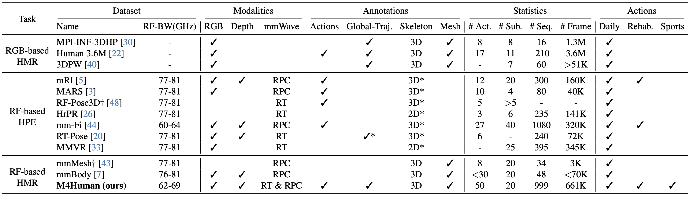

Abstract
Human mesh reconstruction (HMR) provides direct insights into body-environment interaction, which enables various immersive applications. While existing large-scale HMR datasets rely heavily on line-of-sight RGB input, vision-based sensing is limited by occlusion, lighting variation, and privacy concerns. To overcome these limitations, recent efforts have explored radio-frequency (RF) mmWave radar for privacy-preserving indoor human sensing. However, current radar datasets are constrained by sparse skeleton labels, limited scale, and simple in-place actions.
To advance the HMR research community, we introduce M4Human, the current largest-scale (661K-frame) ($9\times$ prior largest) multimodal benchmark, featuring high-resolution mmWave radar, RGB, and depth data. M4Human provides both raw radar tensors (RT) and processed radar point clouds (RPC) to enable research across different levels of RF signal granularity. M4Human includes high-quality motion capture (MoCap) annotations with 3D meshes and global trajectories, and spans 20 subjects and 50 diverse actions, including in-place, sit-in-place, and free-space sports or rehabilitation movements. We establish benchmarks on both RT and RPC modalities, as well as multimodal fusion with RGB-D modalities. Extensive results highlight the significance of M4Human for radar-based human modeling while revealing persistent challenges under fast, unconstrained motion. The dataset and code will be released after the paper publication.
Sensor Setup

Overview of the system setup: M4Human designs a multimodal sensing platform with high-precision marker-based MoCap system. Appropriate calibration and synchronization workflow are designed for accurate alignment between modalities and annotations.
Dataset Scale
Comparison of M4Human with prior datasets († denotes non-public data): Overall, M4Human is the largest RF-based dataset with multi-granularity motion annotations across diverse sensing tasks. It provides both raw radar tensors (RT) and filtered radar point clouds (RPC) for high-fidelity HMR, and extends beyond simple in-place activities to complex, non-in-place rehabilitation and sports. Human body annotations are obtained with a high-precision marker-based MoCap system rather than RGB(D) images (entries marked with *)
HMR Visualization
We provide visualization of frame-level Human Mesh Reconstruction (HMR) Results.
License
M4Human is released under the CC BY-NC 4.0.
Citation
@inproceedings{
yang2023mm,
title={MM-Fi: Multi-Modal Non-Intrusive 4D Human Dataset for Versatile Wireless Sensing},
author={Yang, Jianfei and Huang, He and Zhou, Yunjiao and Chen, Xinyan and Xu, Yuecong
and Yuan, Shenghai and Zou, Han and Lu, Chris Xiaoxuan and Xie, Lihua},
booktitle={Thirty-seventh Conference on Neural Information Processing Systems Datasets and Benchmarks Track},
year={2023},
url={https://openreview.net/forum?id=1uAsASS1th}